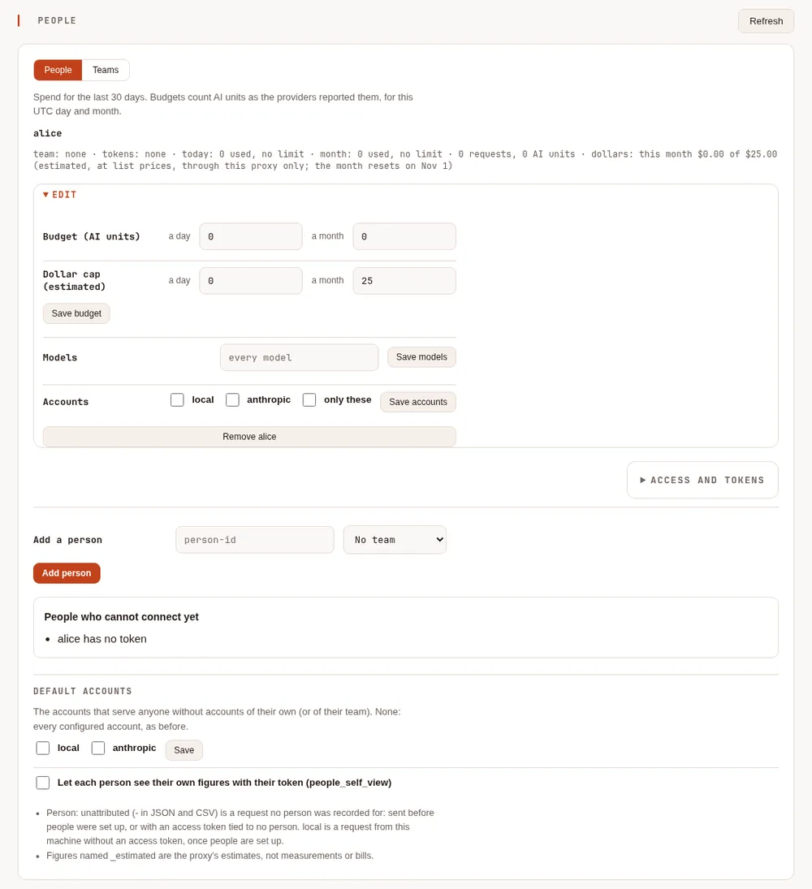
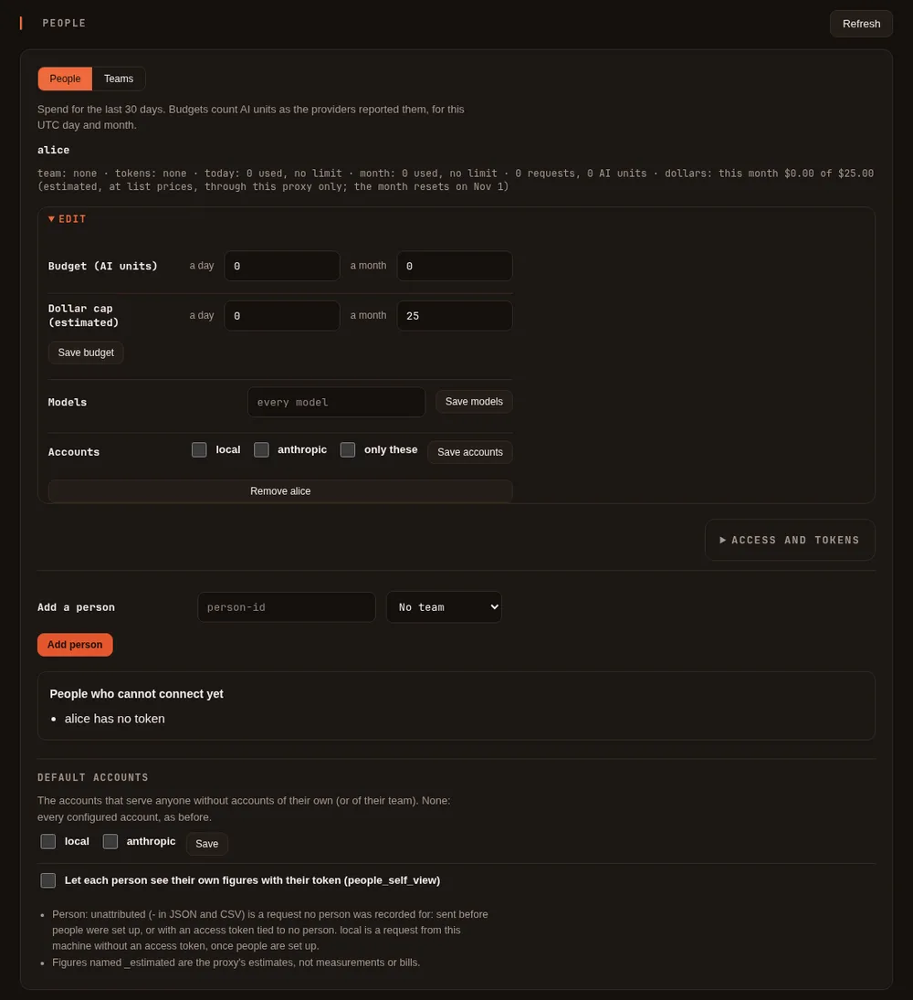
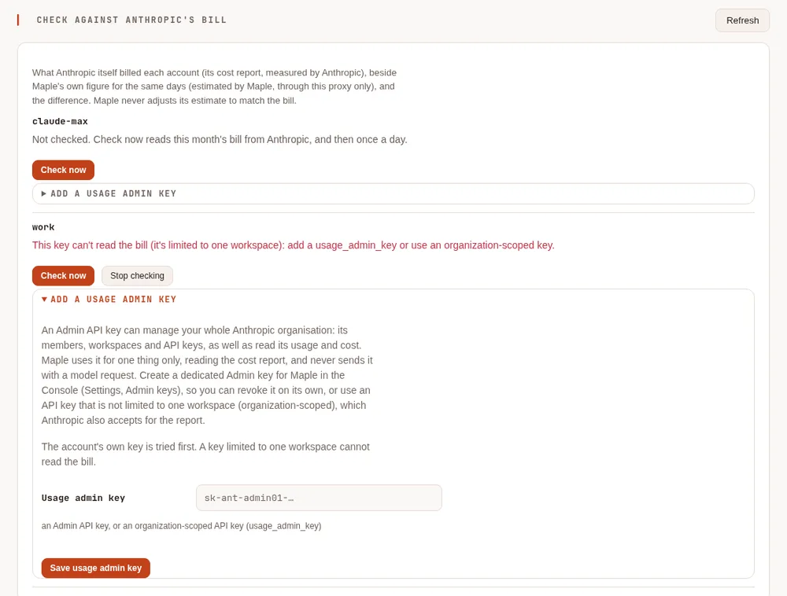
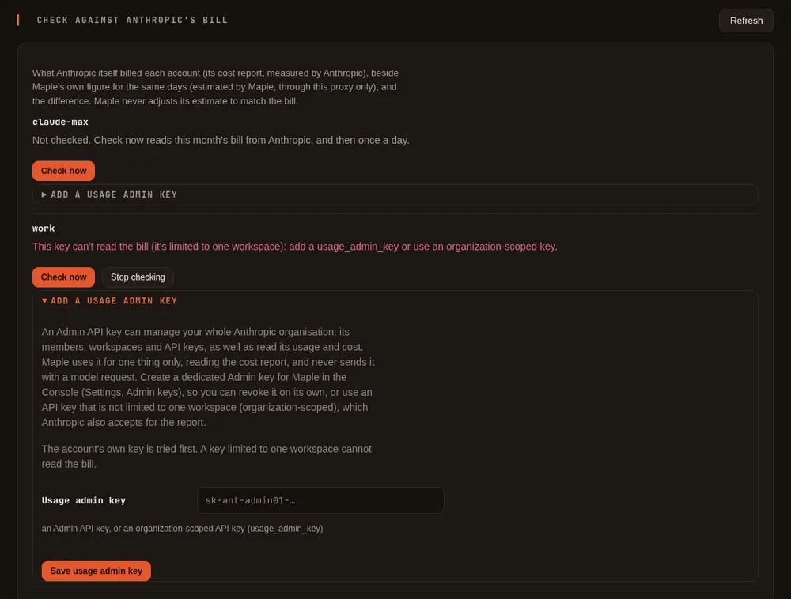

Monthly dollar budgets #
On this page
Give an Anthropic API account a monthly allowance in dollars, with the day it resets, and decide what Maple does when it is spent: warn you, move requests to a fallback, or refuse them. People and teams on a shared proxy can have dollar caps too.
Every dollar figure Maple counts itself is an estimate. Maple prices the usage Anthropic reports for each request at Anthropic's published list prices, for the requests that go through this proxy only. It never sees your balance. The Claude Console is the authority on what you spent and what is left, and Maple can show Anthropic's own figures beside its estimate: see Check against Anthropic's bill.
If you set no dollar budget, nothing changes: no new messages, no new limits.
In plain words #
Anthropic doesn't tell an app how much money an API key has left. So if you give Maple a key with a fixed amount behind it (the monthly API credits of a Claude Max or Team plan, or a limit you set yourself), Maple can't know when it runs out until Anthropic starts refusing requests.
A dollar budget fixes that from Maple's side. You tell Maple "about $100 a month, starting on the 14th". Maple adds up what each request would cost at Anthropic's list prices, warns you at 80% and at 100%, and at 100% sends further requests to another model you chose (or stops, or only warns, as you prefer). On the 14th it starts again from zero.
To set one:
- Add the Anthropic key to Maple (see Sign in), if it is not there already.
- On the setup page, open Costs & budgets and find the Monthly dollar budgets card. Press Set a dollar
budget under the account, enter the dollars a month and the day the month starts, and press Save dollar
budget (below). Or add a
budgets:entry inconfig.yaml(The settings). - Optionally, set a fallback model for when the budget is spent (Fallbacks).
If you have a Claude Max or Team plan, follow Use your Max or Team credits with Maple below: it adds a spend limit on Anthropic's side as well, which is exact.
On the setup page #
Costs & budgets, the Monthly dollar budgets card. The card is shown when the proxy has an account it can price in dollars: Anthropic, Amazon Bedrock, Google Cloud, Microsoft Azure (Claude), and xAI. Any other account is listed once, at the bottom, as "Not priced in dollars here": its requests count $0 against a dollar budget.
For each account, Set a dollar budget (or Edit, once there is one) opens:
| Field | What to enter | Key |
|---|---|---|
| Dollars a month | The month's allowance, in estimated dollars at list prices | max_usd_per_month |
| Month starts on day | 1 to 31: the day it resets, at 00:00 UTC. For Max or Team credits, your plan's billing day | month_starts_on_day |
| When it is spent | only warn: requests go on, move requests to their fallbacks (the default), or refuse requests until it resets | when_spent (warn, fallback, stop) |
| Where the money comes from | Not said, A Max or Team plan's monthly API credits, Credits you bought, or A spend limit you set in the console. A label only | source |
Save dollar budget writes it to config.yaml, and it counts from the next request; Remove dollar budget
takes it away (the account's daily request and AI-unit limits, if any, stay).
With a budget set, the account's line shows:
- "About $X of $Y used since <date> (estimated, at list prices, through this proxy only)", and a bar;
- "Resets on <date> at 00:00 UTC", what happens when it is spent, and where the money comes from;
- after three days of usage, the forecast: "runs out around ..." or "lasts until it resets ..., with about $X left unused", estimated;
- Price notes, when a model could not be priced exactly since the proxy started: whether it was estimated at its family's price or not counted.


Changing a budget is for the setup page on the proxy's own machine. Through single sign-on the card is read-only; people's and teams' caps follow the usual People rules. When the proxy's settings come from files managed elsewhere (a Kubernetes ConfigMap), the card is read-only too: change the file.
The settings #
budgets:
- provider: anthropic # the provider's id
max_usd_per_month: 100 # estimated dollars a month, through this proxy
month_starts_on_day: 14 # optional: 1 (the default) is the calendar month
when_spent: fallback # optional: warn | fallback (the default) | stop
source: subscriber_credits # optional: subscriber_credits | purchased | spend_limit| Key | Default | What it does |
|---|---|---|
max_ | none | The month's allowance, in estimated dollars. It counts on its own: estimate_cost does not have to be on (that setting only decides whether /cost shows a dollar figure) |
month_ | 1 | The day of the month the budget resets, at 00:00 UTC. 1 to 31; a day past the month's end means its last day, so a budget that starts on the 31st resets on 28 or 29 February, 30 April and so on |
when_spent | fallback | What happens at 100%: warn only alerts and requests go on; fallback refuses this account with budget_exceeded so the request moves on to its fallbacks, and with none left the caller gets a 429; stop answers the 429 at once, without trying fallbacks |
source | none | A label for where the money comes from. It changes no behaviour |
A dollar budget can sit in the same entry as max_requests_per_day and max_ai_units_per_day; each limit counts on
its own. month_starts_on_day, when_spent and source need max_usd_per_month. The setup page writes the same
keys; a file you edit yourself is applied once saved.
What counts #
- Every request Maple sends to the account, priced from the token counts in Anthropic's answer: input, output (thinking included, as Anthropic bills it), cache reads, and cache writes at their 5-minute or 1-hour price. The long-prompt price of Claude Haiku 5.5, US-only inference, fast mode, the batch tier and web searches are priced too when the answer says they were used.
- A request that failed or was cut off part way counts for what Anthropic reported before it stopped.
- The proxy's own cache-warming requests count against the account's budget (they are billed), but not against any person's or team's.
- An answer from the response cache never counts: nothing was sent.
- A Claude model that is not yet in Maple's price list is counted at the highest list price of its family (Opus, Sonnet, Haiku and so on), and the proxy's log says so once per model. A model with �0� on its entry is counted at that model's list price instead.
Not counted:
- Anything that did not go through this proxy. Every key and workspace in a Console organisation draws from the same credits: the Console's playground, other apps and other keys are invisible to Maple.
- Code execution container hours, which Anthropic does not report per request.
- A model that is not Claude, on a server that speaks Anthropic's API (an Anthropic-compatible endpoint of another vendor). It is not priced in dollars; the proxy's log says so once.
The prices are Anthropic's published list, as read on 2026-10-11. A discount, a promotion or a price change since then makes the estimate differ from the bill.
The month's spend is kept in the configuration folder, and each request is noted there as it is counted, so a restart
or a crash does not hand back a fresh month, whatever the usage log keeps. The first start with this release reads it
from the usage log, and so does a start after an earlier release ran in between, for the requests that release priced
(the usage log's list_cost_usd column holds each request's figure).
Dollars are counted only while some dollar limit is set (an account's max_usd_per_month, or a person's or team's
daily_usd or monthly_usd): without one, nothing is kept in the configuration folder. A limit you add later starts
from what the usage log says the period has already spent, as long as the log still holds those days. With several
replicas the spend is in the shared store, which counts every request, so a limit added later starts from its figures.
At 80% and 100% #
With budget alerts on (the default once a budget exists), the proxy warns once at 80% and once at 100% of the month, with "estimated" and the reset date in the words, for example:
anthropic: about $80.40 of $100.00 used this month (estimated at list prices, through this proxy only); resets around 14 Nov
The alerts end on the reset day. See Alerts and forecasts for where they show up.
Requests that are already running when the budget is spent are allowed to finish, so the month can end over the amount by what those requests cost.
Forecast #
maple-proxy usage forecast --metric list_cost_usdprints the month's estimated spend so far and, once there are at least three days of usage, either
At this rate, it runs out around 22 Nov (estimated, range 20-24 Nov, from 7 days of your usage through this proxy).
or, when it lasts to the reset,
At this rate, it lasts until it resets around 14 Dec, with about $38 left unused (estimated, from 7 days of your usage through this proxy).
When Anthropic says the credit is gone #
Anthropic answers "credit balance is too low" when the organisation has no credit left. Without a dollar budget, Maple marks the account as out of credit for an hour, tries its fallbacks meanwhile, and then asks again. With a dollar budget on that account, the mark lasts until the budget's reset day instead, since monthly credits come back then rather than within the hour. Any request the account answers in the meantime (you bought credit, say) clears the mark at once. The account is still tried when it is the only choice left.
People and teams #
On a shared proxy, a person or a team can have a dollar cap beside their AI-unit budget. On the setup page, open
People & teams, then Edit under the person (or the team, under Teams on the same tab): the Dollar cap (estimated) row has
a day and a month, beside Budget (AI units); 0 is no cap. Press Save budget. The person's line then
shows, for example, "dollars: today $1.20 of $3.00, this month $8.40 of $25.00 (estimated, at list prices, through this
proxy only; the month resets on 1 Nov)". People's and teams' months are calendar months, in UTC.


Or in config.yaml:
people:
- id: alice
team: platform
budget:
monthly_usd: 25 # estimated dollars a UTC calendar month
daily_usd: 3 # and a UTC day
teams:
- id: platform
budget:
monthly_usd: 200or maple-proxy people budget alice --monthly-usd 25 --daily-usd 3 (and maple-proxy teams budget platform
--monthly-usd 200). A dollar flag you leave out keeps what is set; 0 removes it. A spent cap refuses that person's
(or team's) requests with a 429 budget_exceeded; a team's refusal names the team but not its figures. A person's
dollars count the accounts Maple can price: Claude (through Anthropic, Amazon Bedrock, Google Cloud or Microsoft
Azure, at Anthropic's list prices) and xAI. Requests to other accounts (OpenAI, Gemini, GitHub Copilot, a local or
other OpenAI-compatible server) count $0 against a dollar cap, so pair it with an AI-unit budget if those matter. See Teams.
Metrics #
With metrics on, maple_budget_used_usd_estimated and maple_budget_limit_usd (label provider) give each account's
month, and with metrics.per_person the people's and teams' dollars too. See
Metrics and telemetry.
Check against Anthropic's bill #
Maple's dollar figures are its own estimate. For an Anthropic API account, Maple can also read what Anthropic itself billed and show the two side by side, so you can see how close the estimate is and what else is spending from the same organisation.
In plain words #
Anthropic keeps a cost report for every organisation: what each day cost, model by model, in each workspace (the Console's Cost page shows it). Maple can read that report once a day, and whenever you press Check now, and put it next to its own estimate:
- Anthropic's bill, labelled measured by Anthropic: what Anthropic says it charged.
- Maple's estimate, labelled estimated by Maple: what the requests through this proxy cost at list prices.
- The difference between them, for each complete day and each model.
A difference is normal when other apps, other keys or the Console's playground use the same organisation: Maple only sees what goes through it. Maple never changes its estimate to match the bill; it shows both.
To turn it on:
- On the setup page, open Costs & budgets and find Check against Anthropic's bill. Each Anthropic account is listed there.
- Press Check now under the account. If the account's key is allowed to read the report, the bill appears, and Maple reads it again once a day.
- If the card says "This key can't read the bill (it's limited to one workspace): add a usage_admin_key or use an organization-scoped key.", your key works for Claude but Anthropic does not let it read the organisation's costs. Open Add a usage admin key, paste a key that may read them (below), and press Save usage admin key. If this page has a password, it is asked again.
![Check against Anthropic's bill on Costs & budgets for the account claude-max. Read Oct 12, 07:47 UTC with the usage_admin_key; complete to Oct 12, 00:00 UTC. This month so far: $32.39 of $100.00 (dollar budget) = $31.28 measured by Anthropic + $1.11 estimated by Maple, with a bar. Showing: The whole organisation. Complete days: $31.28 measured by Anthropic, $0.00 estimated by Maple, difference +$31.28. By day: Oct 12 $2.76 so far with Maple's estimate $1.11, then Oct 11 to Oct 1 each with Anthropic's bill, Maple's estimate $0.00 and the difference. By model, complete days: claude-sonnet-5-5 $24.11, claude-opus-5-5 $5.35, claude-haiku-4-5 $1.52, other costs $0.30, each beside Maple's estimate and the difference.](../img/docs/bill-compare-light.webp)
![Check against Anthropic's bill on Costs & budgets for the account claude-max. Read Oct 12, 07:47 UTC with the usage_admin_key; complete to Oct 12, 00:00 UTC. This month so far: $32.39 of $100.00 (dollar budget) = $31.28 measured by Anthropic + $1.11 estimated by Maple, with a bar. Showing: The whole organisation. Complete days: $31.28 measured by Anthropic, $0.00 estimated by Maple, difference +$31.28. By day: Oct 12 $2.76 so far with Maple's estimate $1.11, then Oct 11 to Oct 1 each with Anthropic's bill, Maple's estimate $0.00 and the difference. By model, complete days: claude-sonnet-5-5 $24.11, claude-opus-5-5 $5.35, claude-haiku-4-5 $1.52, other costs $0.30, each beside Maple's estimate and the difference.](../img/docs/bill-compare-dark.webp)


Which key reads the bill #
Anthropic serves the cost report from its Usage & Cost API, which answers only some keys:
| Key | Reads the bill? |
|---|---|
| An API key limited to one workspace (the usual kind, and the one Maple recommends for model requests) | No |
| An API key that is not limited to one workspace (organization-scoped) | Yes |
An Admin API key (sk-ant-admin.) | Yes |
Maple tries the account's own key first, when that key is for Anthropic's own API (a key for another address, such as a gateway, is never sent to Anthropic). If Anthropic refuses it, the card says so and Maple does not ask again with that key on its daily read; Check now always asks.
For a key limited to one workspace, add a usage admin key to the account. It is used only to read the cost report, and never sent with a model request.
An Admin API key can manage your whole Anthropic organisation: its members, workspaces and API keys, as well as read its usage and costs. So:
- create a dedicated Admin key for Maple in the Console (Settings, Admin keys), named so you know what it is for, and revoke it there if you stop using this;
- or use an API key that is not limited to one workspace, which Anthropic also accepts for the report.
The usage admin key is kept like a provider key: in the proxy's secret store, never in config.yaml, and it is never
shown again (the card only says it is set). It can only be set on the setup page on the proxy's own machine (with
the page's password asked again when there is one), and every change is in the activity log, by
name, never by value. Remove usage admin key deletes it from the proxy; revoke it in the Console too if Maple was
its only use.
What the card shows #
For each Anthropic account:
- when the bill was last read, with which key, and up to when it is complete (the day it was read is partial);
- with a dollar budget: This month so far, which is Anthropic's bill up to the last report plus Maple's estimate since then, said in those words with both labels, and a bar against the budget;
- By day: Anthropic's bill, Maple's estimate and the difference, for each day of the month (or of the budget's month); the current day is marked so far;
- By model: the same, added up over the complete days. Costs that have no model (web search, code execution) are a line of their own;
- Showing: when the organisation has several workspaces, pick one to compare. The month-so-far figure always
covers the account's own workspace when the account names one (
workspace_id), or the whole organisation; - Check now, Stop checking (Maple stops reading the bill and forgets what it kept), and the usage admin key.
Every problem is said on the card in plain words: a key that cannot read the bill, a usage admin key Anthropic refused (revoked, or of another organisation), Anthropic asking to wait, or no answer. The last report read is kept and shown meanwhile.
The settings #
providers:
- id: anthropic
type: anthropic
api_key: ${secret:provider/anthropic/api_key}
usage_admin_key: ${secret:provider/anthropic/usage_admin_key} # optional: only to read the bill| Key | What it does |
|---|---|
usage_ | Optional, on a type: anthropic provider. A key used only to read the account's cost report. It must be exactly ${secret:provider/<id>/usage_admin_key}: the setup page writes it. With secrets kept elsewhere (a mounted Kubernetes Secret, say), give the secret that name there and add the line by hand. Any other value (a key written in the file, another secret, a variable) stops the configuration from loading, with a message that says so |
Nothing else needs setting. Without a usage admin key and without pressing Check now, Maple never reads the bill.
What it does and does not do #
- The bill is read at most once a day by itself (after 00:30 UTC, for the day before), and when you press Check
now (once a minute at most). In storage mode
central, one replica reads it and every replica shows it. - What is read and kept is the month's figures per day, workspace and model, in the configuration folder (or the shared storage). No request content, nothing about people.
- A dollar budget counts the larger figure. Once the bill has been read, the account's dollar budget counts
whichever is higher: Anthropic's bill up to the last report plus Maple's estimate since, or Maple's own count. So
spending by other tools or keys on the same account counts too, and Maple never counts less than it saw itself. The
budget's line, its 80% and 100% alerts, the forecast and a refused request then say "counted from Anthropic's bill
(measured) to <time> + Maple's estimate since". A bill not read for more than a day and a half still counts, marked
stale. A bill read with a key that has since been replaced and then fails stops counting (it may be another
organisation's). In storage mode
central, every replica uses a newly read bill within half a minute. Without a bill (no key that can read it, never checked, or Stop checking), the budget counts exactly as before. - Maple never learns a correction from the bill, and never adjusts an estimate with it.
- Anthropic's figures for a day can still change for a little while after it ends, and Priority Tier costs are not in the cost report.
- Accounts through Amazon Bedrock, Google Cloud or Microsoft Azure are billed by those clouds: this card is for Anthropic API accounts only.
- Through single sign-on, admins see the card and can change nothing on it. A person's own view (My access) never shows the organisation's figures.
The Max and Team API credits #
These are Anthropic's terms, summarised from their page API credits for Max and Team plans, as read on 2026-10-11; check it for the current details.
| Plan | Monthly API credits |
|---|---|
| Max 5x | $100 |
| Max 20x | $200 |
| Team | $20 per Standard seat and $100 per Premium seat, pooled into one balance, up to $500 |
- You claim them by linking your plan to one Claude Console organisation, from Anthropic's settings. Follow Anthropic's page for the exact steps, which may change.
- They arrive each billing cycle, shortly after the plan's payment, and expire at the end of it: unused credits do not roll over.
- They are spent before any credits you bought.
- They cover the Claude API (the Messages and Message Batches APIs). They do not cover Claude Code, and not Claude through Amazon Bedrock, Google Cloud Vertex AI, Microsoft Foundry or Claude Platform on AWS.
- Every API key and workspace in the linked organisation draws from the same balance. The Console shows the balance and its expiry date.
Use your Max or Team credits with Maple #
Link your plan to a Console organisation, as Anthropic's page describes. Note the day your plan bills: that is when the credits arrive.
Make a workspace for Maple in that organisation, and give it its own spend limit at or under your credit amount (for example $100 for Max 5x). Anthropic enforces this limit exactly; Maple's budget is the earlier, softer one.
Create an API key in that workspace in the Console.
Add the key to Maple:
maple-harness auth login claude, or the Anthropic (Claude) card on the setup page (see Sign in).Add the budget, with the amount and your billing day: on the setup page (Costs & budgets, Monthly dollar budgets, Set a dollar budget: Dollars a month
100, Month starts on day your billing day, Where the money comes from A Max or Team plan's monthly API credits), or inconfig.yaml:budgets: - provider: anthropic max_usd_per_month: 100 month_starts_on_day: 14 # your plan's billing day when_spent: fallback source: subscriber_creditsChoose what happens at 100%:
fallbackwith a fallback to a model you have elsewhere,stopto refuse, orwarnto let requests go on until Anthropic itself refuses them.
Maple's figure is an estimate of this proxy's traffic; the workspace spend limit and the Console's balance are what Anthropic actually applies. If you use the same organisation from other apps, the credits run out sooner than Maple's figure says.
Related #
Proxy settings: Budgets · Check against Anthropic's bill · Alerts and forecasts · Teams · What /cost tells you · Sign in